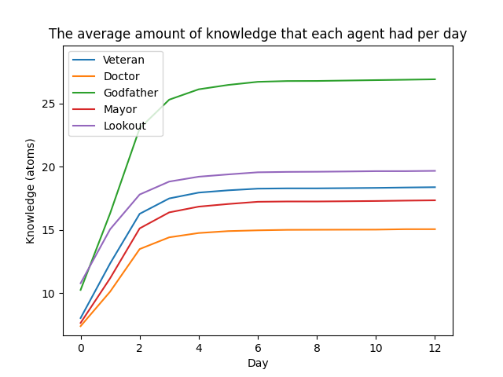
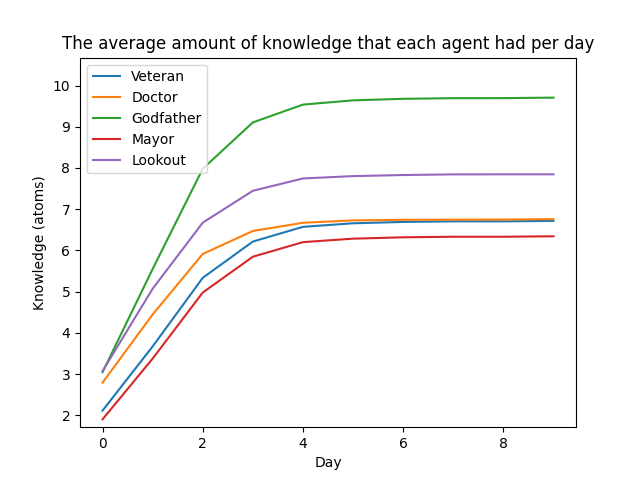
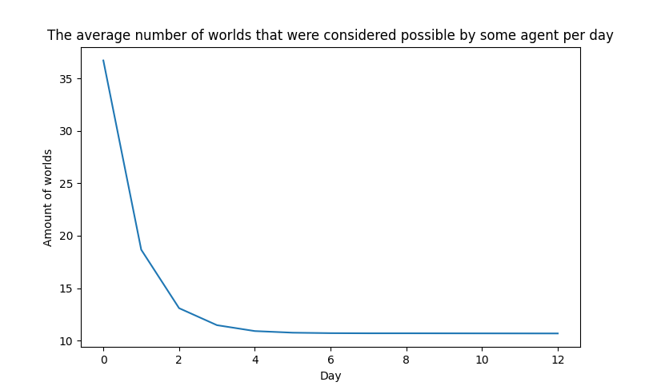
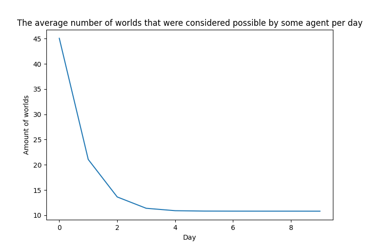

To look at the impact that the axioms have on the winrates, a 1000 games were run where the agents were able to use the axioms, and a 1000 games were run where the agents were able to use the axioms. Table 1 shows the average win rates for the town and the mafia factions with and without the agents using the axioms to make inferences. Without using axioms, the mafia obtained the highest winrate of 56.4%. With using axioms, the town obtained the highest winrate of 67.6%.
Table 1: The win rates of the town and mafia factions over 1000 runs, using axioms and not using axioms.
Axioms
No Axioms
Town wins
67.6%
43.6%
Mafia wins
32.4%
56.4%
To look at the impact that each town member has on the win rate, a 1000 games for each town role were ran, where the godfather was told to kill that specific town member. Thus, for every game the first town member to be killed by the godfather would always be the same role. Table 2 shows the win rates for role which was targeted first. The town won the most games when the doctor was targeted first, with a win rate of 79.8%, and the mafia won the most games when the mayor was targeted first, with a win rate of 43.2%.
Table 2: The win rates of the town and mafia factions over a 1000 runs, when
the godfather targeted a specific role first. In the runs the agents used the
axioms to make inferences.
Veteran
Doctor
Mayor
Lookout
Town wins
70.5%
79.8%
56.8%
71.9%
Mafia wins
29.5%
20.2%
43.2%
28.1%
Figure 3 and Figure 4 show the average amount of worlds per day. Figure 1 and Figure 2 show the average amount knowledge that each agent has per day. Overall, the lookout/godfather has the most knowledge and the mayor has the least.

Figure 1: The amount of knowledge the agents had on average for each day, when agents were using axioms to obtain more information.

Figure 2: The amount of knowledge the agents had on average for each day, when agents were not using axioms to obtain more information.

Figure 3: The amount of worlds that were considered possible by any agent, when agents were using axioms to obtain more information.

Figure 4: The amount of worlds that were considered possible by any agent, when agents were not using axioms to obtain more information.
Group 03 Isabelle Tilleman (s3656586), Tumi Moeng (s4813405), Stijn de Vries (s3447146)